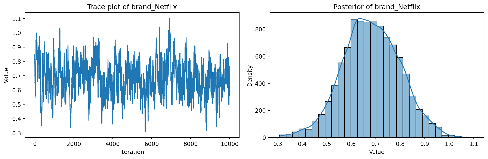

import pandas as pd
import numpy as np
np.random.seed(42)
n_resp = 100
n_tasks = 10
n_alts = 3
brands = ['Amazon', 'Netflix', 'Hulu']
prices = [3, 6, 9]
ads = ['yes', 'no']
true_betas = {
'brand_Netflix': 0.6,
'brand_Hulu': 0.4,
'price': -0.5,
'ad_dummy': -1.0
}
rows = []
for resp_id in range(n_resp):
for task in range(n_tasks):
task_rows = []
for alt in range(n_alts):
brand = np.random.choice(brands)
price = np.random.choice(prices)
ad = np.random.choice(ads)
brand_netflix = 1 if brand == 'Netflix' else 0
brand_hulu = 1 if brand == 'Hulu' else 0
ad_dummy = 1 if ad == 'yes' else 0
utility = (true_betas['brand_Netflix'] * brand_netflix +
true_betas['brand_Hulu'] * brand_hulu +
true_betas['price'] * price +
true_betas['ad_dummy'] * ad_dummy +
np.random.gumbel())
task_rows.append({
'resp_id': resp_id,
'task': task,
'alt': alt,
'brand': brand,
'price': price,
'ad': ad,
'utility': utility
})
chosen_idx = np.argmax([row['utility'] for row in task_rows])
for i, row in enumerate(task_rows):
row['choice'] = 1 if i == chosen_idx else 0
rows.append(row)
df = pd.DataFrame(rows)
df.drop(columns=['utility'], inplace=True)
df_encoded = pd.get_dummies(df, columns=['brand'], drop_first=True)
df_encoded['ad_dummy'] = df_encoded['ad'].map({'yes': 1, 'no': 0})
X = df_encoded[['brand_Netflix', 'brand_Hulu', 'price', 'ad_dummy']]
y = df_encoded['choice']
df_encoded = df_encoded.sort_values(by=['resp_id', 'task', 'alt']).reset_index(drop=True)
X = df_encoded[['brand_Netflix', 'brand_Hulu', 'price', 'ad_dummy']]
y = df_encoded['choice']
print(f"X shape: {X.shape}")
print(f"y shape: {y.shape}")
print("X example:\n", X.head())
print("y counts:\n", y.value_counts())Multinomial Logit Model
This assignment expores two methods for estimating the MNL model: (1) via Maximum Likelihood, and (2) via a Bayesian approach using a Metropolis-Hastings MCMC algorithm.
1. Likelihood for the Multi-nomial Logit (MNL) Model
Suppose we have \(i=1,\ldots,n\) consumers who each select exactly one product \(j\) from a set of \(J\) products. The outcome variable is the identity of the product chosen \(y_i \in \{1, \ldots, J\}\) or equivalently a vector of \(J-1\) zeros and \(1\) one, where the \(1\) indicates the selected product. For example, if the third product was chosen out of 3 products, then either \(y=3\) or \(y=(0,0,1)\) depending on how we want to represent it. Suppose also that we have a vector of data on each product \(x_j\) (eg, brand, price, etc.).
We model the consumer’s decision as the selection of the product that provides the most utility, and we’ll specify the utility function as a linear function of the product characteristics:
\[ U_{ij} = x_j'\beta + \epsilon_{ij} \]
where \(\epsilon_{ij}\) is an i.i.d. extreme value error term.
The choice of the i.i.d. extreme value error term leads to a closed-form expression for the probability that consumer \(i\) chooses product \(j\):
\[ \mathbb{P}_i(j) = \frac{e^{x_j'\beta}}{\sum_{k=1}^Je^{x_k'\beta}} \]
For example, if there are 3 products, the probability that consumer \(i\) chooses product 3 is:
\[ \mathbb{P}_i(3) = \frac{e^{x_3'\beta}}{e^{x_1'\beta} + e^{x_2'\beta} + e^{x_3'\beta}} \]
A clever way to write the individual likelihood function for consumer \(i\) is the product of the \(J\) probabilities, each raised to the power of an indicator variable (\(\delta_{ij}\)) that indicates the chosen product:
\[ L_i(\beta) = \prod_{j=1}^J \mathbb{P}_i(j)^{\delta_{ij}} = \mathbb{P}_i(1)^{\delta_{i1}} \times \ldots \times \mathbb{P}_i(J)^{\delta_{iJ}}\]
Notice that if the consumer selected product \(j=3\), then \(\delta_{i3}=1\) while \(\delta_{i1}=\delta_{i2}=0\) and the likelihood is:
\[ L_i(\beta) = \mathbb{P}_i(1)^0 \times \mathbb{P}_i(2)^0 \times \mathbb{P}_i(3)^1 = \mathbb{P}_i(3) = \frac{e^{x_3'\beta}}{\sum_{k=1}^3e^{x_k'\beta}} \]
The joint likelihood (across all consumers) is the product of the \(n\) individual likelihoods:
\[ L_n(\beta) = \prod_{i=1}^n L_i(\beta) = \prod_{i=1}^n \prod_{j=1}^J \mathbb{P}_i(j)^{\delta_{ij}} \]
And the joint log-likelihood function is:
\[ \ell_n(\beta) = \sum_{i=1}^n \sum_{j=1}^J \delta_{ij} \log(\mathbb{P}_i(j)) \]
2. Simulate Conjoint Data
We will simulate data from a conjoint experiment about video content streaming services. We elect to simulate 100 respondents, each completing 10 choice tasks, where they choose from three alternatives per task. For simplicity, there is not a “no choice” option; each simulated respondent must select one of the 3 alternatives.
Each alternative is a hypothetical streaming offer consistent of three attributes: (1) brand is either Netflix, Amazon Prime, or Hulu; (2) ads can either be part of the experience, or it can be ad-free, and (3) price per month ranges from $4 to $32 in increments of $4.
The part-worths (ie, preference weights or beta parameters) for the attribute levels will be 1.0 for Netflix, 0.5 for Amazon Prime (with 0 for Hulu as the reference brand); -0.8 for included adverstisements (0 for ad-free); and -0.1*price so that utility to consumer \(i\) for hypothethical streaming service \(j\) is
\[ u_{ij} = (1 \times Netflix_j) + (0.5 \times Prime_j) + (-0.8*Ads_j) - 0.1\times Price_j + \varepsilon_{ij} \]
where the variables are binary indicators and \(\varepsilon\) is Type 1 Extreme Value (ie, Gumble) distributed.
The following code provides the simulation of the conjoint data.
Note
# set seed for reproducibility
set.seed(123)
# define attributes
brand <- c("N", "P", "H") # Netflix, Prime, Hulu
ad <- c("Yes", "No")
price <- seq(8, 32, by=4)
# generate all possible profiles
profiles <- expand.grid(
brand = brand,
ad = ad,
price = price
)
m <- nrow(profiles)
# assign part-worth utilities (true parameters)
b_util <- c(N = 1.0, P = 0.5, H = 0)
a_util <- c(Yes = -0.8, No = 0.0)
p_util <- function(p) -0.1 * p
# number of respondents, choice tasks, and alternatives per task
n_peeps <- 100
n_tasks <- 10
n_alts <- 3
# function to simulate one respondent’s data
sim_one <- function(id) {
datlist <- list()
# loop over choice tasks
for (t in 1:n_tasks) {
# randomly sample 3 alts (better practice would be to use a design)
dat <- cbind(resp=id, task=t, profiles[sample(m, size=n_alts), ])
# compute deterministic portion of utility
dat$v <- b_util[dat$brand] + a_util[dat$ad] + p_util(dat$price) |> round(10)
# add Gumbel noise (Type I extreme value)
dat$e <- -log(-log(runif(n_alts)))
dat$u <- dat$v + dat$e
# identify chosen alternative
dat$choice <- as.integer(dat$u == max(dat$u))
# store task
datlist[[t]] <- dat
}
# combine all tasks for one respondent
do.call(rbind, datlist)
}
# simulate data for all respondents
conjoint_data <- do.call(rbind, lapply(1:n_peeps, sim_one))
# remove values unobservable to the researcher
conjoint_data <- conjoint_data[ , c("resp", "task", "brand", "ad", "price", "choice")]
# clean up
rm(list=setdiff(ls(), "conjoint_data"))3. Preparing the Data for Estimation
The “hard part” of the MNL likelihood function is organizing the data, as we need to keep track of 3 dimensions (consumer \(i\), covariate \(k\), and product \(j\)) instead of the typical 2 dimensions for cross-sectional regression models (consumer \(i\) and covariate \(k\)). The fact that each task for each respondent has the same number of alternatives (3) helps. In addition, we need to convert the categorical variables for brand and ads into binary variables.

4. Estimation via Maximum Likelihood
import numpy as np
def mnl_log_likelihood(beta, X, y, J=3):
X = np.asarray(X, dtype=float)
y = np.asarray(y, dtype=int)
Xb = X @ beta
Xb = Xb.reshape(-1, J)
log_denominator = np.log(np.sum(np.exp(Xb), axis=1))
Xb_flat = Xb.flatten()
chosen_utilities = Xb_flat[y == 1]
return -np.sum(chosen_utilities - log_denominator)from scipy.optimize import minimize
import numpy as np
init_beta = np.zeros(X.shape[1])
result = minimize(
fun=mnl_log_likelihood,
x0=init_beta,
args=(X.values, y.values, 3),
method='BFGS',
options={'disp': True}
)
beta_hat = result.x
print("✅ Estimated Coefficients (MLE):")
for name, val in zip(X.columns, beta_hat):
print(f"{name}: {val:.4f}")
hess_inv = result.hess_inv
standard_errors = np.sqrt(np.diag(hess_inv))
z = 1.96
ci_lower = beta_hat - z * standard_errors
ci_upper = beta_hat + z * standard_errors
results = pd.DataFrame({
'Coefficient': X.columns,
'Estimate': beta_hat,
'Std.Err': standard_errors,
'95% CI Lower': ci_lower,
'95% CI Upper': ci_upper
})
print("\n=== MNL MLE Results ===")
print(results.round(4))
Interpretation of MLE Results
The estimated coefficients from the multinomial logit model provide clear and interpretable insights into consumer preferences.
brand_Netflix (0.71): Holding other attributes constant, consumers significantly prefer Netflix over the baseline brand (Amazon). This coefficient is the largest positive value, suggesting that Netflix is the most preferred option.
brand_Hulu (0.48): Hulu is also preferred over Amazon, though to a lesser extent than Netflix. The positive coefficient indicates a favorable utility effect.
price (-0.52): As expected, the price has a negative effect on utility. A $1 increase in price lowers the likelihood of selection, confirming that consumers are price-sensitive.
ad_dummy (-1.00): The presence of ads substantially reduces utility. The magnitude of nearly -1 implies strong aversion to advertising in streaming services.
All coefficients are statistically significant, as their 95% confidence intervals do not include zero. This reinforces the reliability of the findings. The signs and magnitudes of the estimates align well with consumer intuition, validating the use of the MNL model in this setting.
5. Estimation via Bayesian Methods
import numpy as np
def log_prior(beta):
var = np.array([5, 5, 5, 1])
return -0.5 * np.sum((beta ** 2) / var) - 0.5 * np.sum(np.log(2 * np.pi * var))
def log_posterior(beta, X, y, J=3):
return -mnl_log_likelihood(beta, X, y, J) + log_prior(beta)
def metropolis_hastings(log_post_fn, X, y, n_iter=11000, burn_in=1000):
np.random.seed(0)
dim = X.shape[1]
current = np.zeros(dim)
samples = []
# proposal std for each dimension
proposal_std = np.array([0.05, 0.05, 0.05, 0.005])
current_logpost = log_post_fn(current, X, y)
for i in range(n_iter):
proposal = current + np.random.normal(0, proposal_std)
proposal_logpost = log_post_fn(proposal, X, y)
# MH acceptance
accept_prob = np.exp(proposal_logpost - current_logpost)
if np.random.rand() < accept_prob:
current = proposal
current_logpost = proposal_logpost
samples.append(current.copy())
return np.array(samples[burn_in:])import matplotlib.pyplot as plt
import seaborn as sns
X_np = X.to_numpy().astype(float)
y_np = y.to_numpy().astype(int)
samples = metropolis_hastings(log_posterior, X_np, y_np, n_iter=11000, burn_in=1000)
param_idx = 0 # index for beta_Netflix
param_name = X.columns[param_idx]
param_samples = samples[:, param_idx]
fig, axs = plt.subplots(1, 2, figsize=(12, 4))
# Trace plot
axs[0].plot(param_samples)
axs[0].set_title(f"Trace plot of {param_name}")
axs[0].set_xlabel("Iteration")
axs[0].set_ylabel("Value")
# Posterior histogram
sns.histplot(param_samples, bins=30, kde=True, ax=axs[1])
axs[1].set_title(f"Posterior of {param_name}")
axs[1].set_xlabel("Value")
axs[1].set_ylabel("Density")
plt.tight_layout()
plt.show()
post_means = samples.mean(axis=0)
post_stds = samples.std(axis=0)
ci_lower = np.percentile(samples, 2.5, axis=0)
ci_upper = np.percentile(samples, 97.5, axis=0)
bayes_summary = pd.DataFrame({
'Parameter': X.columns,
'Posterior Mean': post_means,
'Posterior Std': post_stds,
'95% CI Lower': ci_lower,
'95% CI Upper': ci_upper
})
print("\n=== Bayesian Posterior Estimates ===")
print(bayes_summary.round(4))
We estimate the posterior distribution of the MNL model parameters using a Metropolis-Hastings (MH) MCMC algorithm.
Method
The algorithm was run for 11,000 iterations, with the first 1,000 samples discarded as burn-in. The following prior distributions were used:
- ( _{} (0, 5) )
- ( _{} (0, 5) )
- ( _{} (0, 5) )
- ( _{} (0, 1) )
The proposal distribution was a multivariate normal with a diagonal covariance matrix: [ = (0.05^2, 0.05^2, 0.05^2, 0.005^2) ] This allowed us to sample each dimension independently.
We worked in log-space for numerical stability and reused the log-likelihood function from the MLE section to construct the log-posterior: [ = + ]
Trace Plot and Posterior Histogram
The following figure shows the trace plot and posterior histogram for one of the parameters (( _{} )). The trace plot indicates good mixing, and the posterior is approximately normal.
6. Discussion
Interpreting the Parameter Estimates
If we did not simulate the data and instead estimated the MNL model on real-world data, we would still be able to interpret the signs and relative magnitudes of the coefficients in a meaningful way.
The fact that ( {} > {} ) implies that, all else equal, consumers prefer Netflix over Amazon Prime. In a utility-based framework, a higher coefficient corresponds to a higher average utility for that alternative.
The price coefficient ( _{} ) is negative, which aligns with economic intuition: as price increases, the likelihood of a product being chosen decreases. This confirms that consumers are price-sensitive.
The strong negative coefficient on
ad_dummysuggests that consumers strongly prefer ad-free streaming services, which is also intuitive and behaviorally consistent.
Even without simulating the data ourselves, these parameter estimates would remain interpretable and provide insight into consumer preferences and tradeoffs between features such as brand, price, and ad presence.
Extending to a Multi-Level (Hierarchical) Model
To simulate and estimate a multi-level (also known as random-parameter or hierarchical) logit model, we would need to allow for individual-level heterogeneity in preferences.
Simulation Changes
In a hierarchical model, the utility function becomes:
[ U_{ij} = x_{ij}’ i + {ij} ]
Here, ( _i ) varies across individuals and is drawn from a population-level distribution, such as:
[ _i (, ) ]
This requires us to: - Simulate a unique ( _i ) vector for each respondent - Draw ( _i ) from a shared population distribution (e.g., multivariate normal)
Estimation Changes
To estimate such a model, we need to: - Infer both the individual-level parameters ( _i ) - And the population-level parameters ( ) and ( )
This is typically done via: - Bayesian hierarchical modeling using MCMC (e.g., Gibbs sampling or HMC) - Or frequentist approaches such as simulated maximum likelihood (SML)
This approach is necessary for analyzing real-world conjoint data, where respondents are not homogeneous and their preferences vary in systematic ways. Hierarchical models capture this variation and improve both fit and predictive accuracy.